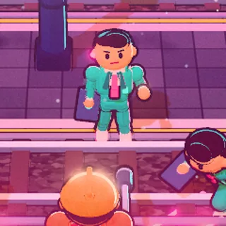
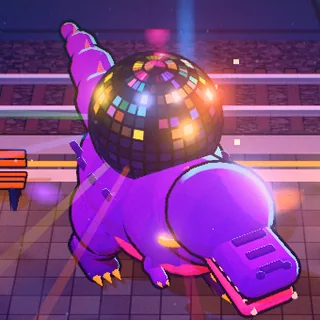

Gare de Mons · Quai 2 · 4 h 47
PRIVATIX
Un cheminot en 3x8, une clé à tire-fond, une cafetière de 1987 et des collègues à la radio contre une armée de consultants qui veulent vendre la gare avant la fin du service.
Aussi : la version classique (2D) · le prototype 3D (Discosaure et butin)
Le jeu
Le 7 h 12 est supprimé. Motif : « Optimisation ».
Le consortium Privatix Rail Solutions (« Le rail, en mieux. Pour vous. Pour nous surtout. ») s'apprête à signer la cession de la ligne, de la gare et même du café de la salle des pauses. La signature est prévue « à la fin du service », au dernier étage du BAG.
Léon, ou Léa, agent·e polyvalent·e en 3x8 depuis neuf ans, prend la clé à tire-fond de son grand-père et remonte la gare à contre-courant : les Quais & Voies, la Passerelle que les navetteurs appellent « le Calatrava », puis le Hall & BAG, jusqu'au bureau où Gontran Vanderslide tient le stylo.
Chaque tentative est un Shift. Quand le héros tombe, les collègues le ramènent à l'OCC. Et la signature est reportée, encore et encore : le Sondage de Privatix n'arrive jamais à trouver un créneau.
Gameplay
Chaque coup se sent
Un combat nerveux et lisible : tout ce qui blesse est magenta et télégraphié. Pas de mort injuste, seulement des réunions qu'on n'aurait pas dû accepter.
-
Clic · J
Combo à la clé à tire-fond
Trois coups, hitstop, étincelles et recul qui plaque les consultants contre les quais. Le troisième coup se reconnaît les yeux fermés.
-
Espace · 2 charges
Dash « Retard SNCB »
Une esquive à deux charges qui traverse les attaques. Parfait au dernier moment, il ralentit le temps : vous n'êtes pas en retard, vous êtes en avance sur le prochain.
-
Clic droit · F
Coup de sifflet
La jauge de Mobilisation se remplit au combat. Un coup bref repousse et étourdit ; maintenu, c'est le Préavis de grève, et toute la salle s'arrête.
-
R · Gobelets
Le Café
Deux Gobelets au départ, quatre au plus. Boire soigne l'Énergie… et fait monter le Burnout. Le café de la Vieille Dame n'a jamais été détartré, c'est ce qui fait son goût.
-
Jauge 0 à 100
Le Burnout : plus fort, plus fragile
Encaisser, dasher et boire du café le font monter. Il augmente vos dégâts et ceux que vous recevez ; l'horloge du 3x8 l'empêche de redescendre sous un plancher. À 100, c'est le Pétage de plombs. Rester frais ou jouer au bord ?
-
6 emplacements · 5 raretés
Un butin qui se voit sur le héros
Outil, Casque, Gilet, Gants, Chaussures, Insigne : chaque pièce ramassée change la silhouette du héros. Le butin tombe des sacoches, caisses et colis, jamais d'un voyageur.
- Réforme
- Réglementaire
- Homologué
- Hors-série
- Patrimoine
-
Roguelite
Des Shifts en 3x8
Chaque run est un Shift, au roulement imposé : Matin, Après-midi ou Nuit, comme dans la vraie vie. L'horloge avance de 30 minutes par salle. Les collègues envoient des Avantages acquis par radio pendant le run ; après un échec, on rentre à l'OCC dépenser ses Points de Syndicalisme au Tableau des revendications. Mourir n'est jamais une perte sèche.
- Quais & Voies
- Passerelle « Calatrava »
- Hall & BAG
- Bureau de Vanderslide
Galerie
Captures du jeu
Images réelles, prises dans la version navigateur et dans le prototype 3D.
-

Jeu Lire, esquiver, punir : le magenta annonce chaque attaque.
-

Jeu Mêlée sur les voies, quai de Mons.
-

Jeu Le coup 3 : hitstop, éclair, consultants en réunion.
-

Prototype Le Discosaure entre en piste.
-

Prototype Piétinement en rythme : le tempo est le télégraphe.
-

Prototype Le butin au sol et sa carte d'objet.


Bestiaire
Les ressources de Privatix
Des gens payés pour ne pas savoir et des machines achetées pour ne pas répondre. Ils ne meurent pas : ils « partent en réunion », se mettent en mute ou affichent HORS SERVICE.
-

Ennemi
Consultant Junior « Slide-Ninja »
24 ans, première mission, un framework et un manager qui attend un quick win. Chasse en meute et laisse une traînée de slides.
« On va challenger ça en mode agile ! »
-
Ennemi
Borne Automatique
Elle a remplacé le guichet de Béné et n'a jamais accepté le bon moyen de paiement. Tire des tickets ; son dos est vulnérable.
« Veuillez insérer votre dignité. »
-
Ennemi
Drone Optimètre
Il mesure le temps que met un agent à sourire et marque le héros pour toute la salle. Il perd sa cible dans les ombres des arcs.
« Souriez, vous êtes filmé pour la qualité. »
-
Élite
Manager KPI « Le Tableur »
Le train avait douze minutes de retard, mais l'indicateur est vert. Protège ses troupes en Réunion d'alignement ; frappé à ce moment, il perd tous ses boucliers.
« Vous êtes à 63 % de l'objectif. De vie. »
-
Ennemi majeur
Le Furet putride
Le ramassage des déchets du BAG a été externalisé ; un consultant a eu une idée : un furet. Il a grandi. Beaucoup. Nuages d'odeur, roulades dans les sacs bleus, et il vole vos Gobelets.
« Tri en cours. Veuillez patienter. »
-

Ennemi majeur
Le Discosaure
Senior Partner fondateur de Synergia Partners. Il vend le même plan de restructuration depuis la soirée de lancement du cabinet, boule à facettes comprise. Ce n'est pas lui qui est fossile, c'est sa méthode.
« Restructurez avec moi ! Un, deux, un, deux ! »
-
Boss · biome 2
Elio Di Rupo, « l'Invité d'honneur »
Il ne travaille pas pour Privatix : il a juste répondu « disponible » au Sondage, à condition qu'il y ait un ruban à couper. Il défend son temps de parole, discours de quarante pages et ciseaux d'inauguration en main. On ne le bat pas : on obtient la parole.
« Je serai bref. » (Il ne l'est pas.)
Caricature bon enfant, autorisée par le porteur du projet. Toutes ses répliques sont inventées pour le jeu.
Le hub
L'OCC, « Operation Coffee Center »
Au rez-de-chaussée arrière du BAG, le Centre Opérationnel de la gare tourne jour et nuit devant un mur d'écrans et une rangée de pupitres. Privatix a pris les étages un par un, « en phase de transition », mais ne peut pas fermer celui-ci : sans centre opérationnel, plus aucun train ne roule, et un réseau à l'arrêt se vend mal.
Hiver 1987 : la direction remplace la cafetière collective par un distributeur payant. Le soir même, Marcel et une poignée d'accompagnateurs la portent jusqu'à l'OCC. À 22 h 47, elle sert son premier café. On l'appelle la Vieille Dame. Elle siffle avant chaque événement important.
Entre deux Shifts, on y dépense ses Points de Syndicalisme, on règle son Paquetage au Vestiaire de Josiane et on écoute les collègues. Chaque retour apporte au moins une ressource gardée et une réplique nouvelle.
Les pupitres
- PACOBus de remplacement, correspondancesBéné
- RTSRégulation et matériel roulantYasmina, Kevin
- TLI & AITAnnonces en gareRudy
- RCCAVoyageurs à mobilité réduiteFatou
- Permanence conduiteGestion des conducteursMarcel
- DPDAccompagnateurs de trainJosiane
7e commandement : « Tu ne laisseras aucun collègue sur le quai. »
Télécharger
Privatix sur votre ordinateur
La même version que dans le navigateur, emballée dans une application de bureau qui tire le meilleur de votre carte graphique. Gratuite, pour Windows, macOS et Linux.
Dernière version publiée sur GitHub.
Toutes les versions sur GitHub
Versions précédentes
Les applications ne sont pas signées : un certificat de signature coûte cher, et Privatix est gratuit. Votre système va donc se méfier au premier lancement. C'est normal, et vous pouvez vérifier que le fichier vient bien de la page GitHub du projet.
Windows (SmartScreen) : « Windows a protégé votre ordinateur » → Informations complémentaires → Exécuter quand même.
macOS (Gatekeeper) : « Privatix ne peut pas être ouvert » → clic droit (ou Ctrl-clic) sur l'application → Ouvrir, puis confirmer. Sur macOS 15 et suivants : Réglages Système → Confidentialité et sécurité → Ouvrir quand même.
Linux : rendez l'AppImage exécutable (chmod +x Privatix-*.AppImage, ou Propriétés → Autoriser l'exécution), puis lancez-la.
Configuration
Ce qu'il faut pour prendre son poste
Navigateur
WebGL 2 obligatoire
- Chrome, Edge, Firefox ou Safari récents.
- Une carte graphique de moins de dix ans, intégrée suffit.
- Mobile en paysage : Android milieu de gamme, iPhone récent.
- Clavier et souris, manette ou écran tactile.
Qualité
Bas, Moyen, Haut
- Choisie automatiquement au démarrage (Moyen sur écran tactile).
- Forcée par l'adresse :
?q=bas,?q=moyenou?q=haut. - Dans le prototype : F2 fait défiler les niveaux.
- F3 affiche les mesures (images par seconde, appels de dessin).
Accessibilité
Réduction des mouvements
- Suit le réglage de votre système (prefers-reduced-motion).
- Bascule en jeu : M (prototype : F4), ou
?rm=1. - Secousses réduites, plus aucun clignotement : la boule du Discosaure arrête de stroboscoper.
- Les télégraphes restent lisibles par leurs contours et leurs remplissages.
FAQ
Questions fréquentes
Le jeu est-il gratuit ?
Oui, dans le navigateur comme en application de bureau. Pas de publicité, pas d'achat intégré : Privatix n'a rien à vous vendre, contrairement à Privatix Rail Solutions.
Navigateur ou application de bureau ?
C'est le même jeu. L'application embarque son propre moteur de rendu et peut forcer la carte graphique dédiée : utile sur un portable ou si votre navigateur bride WebGL. Le navigateur, lui, se met à jour tout seul.
Pourquoi trois versions jouables ?
Le jeu passe de la 2D à la 3D temps réel. La version 3D est la version principale ; la version classique en pixel art reste jouable jusqu'à la bascule complète ; le prototype 3D montre le Discosaure et le butin d'équipement en avant-première.
Ma progression est-elle sauvegardée ?
Oui, sur votre appareil (stockage local du navigateur ou de l'application). Vider les données du site efface la sauvegarde.
Le jeu se moque-t-il des cheminots ou des voyageurs ?
Jamais. La satire vise le management, le conseil et la logique de privatisation. Les cheminots sont drôles parce qu'ils sont lucides ; les voyageurs ont toujours raison d'être fatigués. La SNCB est le service public que l'on défend.
Mon antivirus ou mon système bloque l'application.
Les applications ne sont pas signées : voyez l'encart de la section Télécharger pour ouvrir le fichier sur Windows, macOS et Linux. En cas de doute, jouez dans le navigateur.